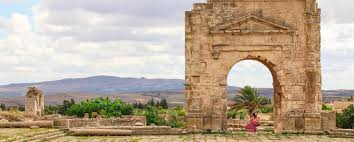

<div class="left-meteo">
<div class="left-navbar">
<div class="search-icon">
    <!--class="fa-xs" pour spécifier une taille d'icône plus petite -->
    <fa-icon class="fa-xs" [icon]="faMagnifyingGlass"></fa-icon></div>
<div class="search-input"><input type="text" placeholder="Search" ></div>
<div class="localisation"><fa-icon class="fa-xs" [icon]="faLocation"></fa-icon></div>
</div>
<div class="left-databox">

<div class="left-temps-date">
<div class="left-temps-img"></div>
<div class="left-temps-value">12 <sup>°C</sup></div>
<div class="left-date-time">Monday , <span class="time">16:00 </span> </div>
</div>

<div class="dividing-line"></div>

<div class="left-details">
<div class="left-temps">
    <div class="left-temp-phrase-img"><fa-icon class="fa-xs" [icon]="faCloud"></fa-icon></div>
    <div class="left-summery-value">Mostly Cloudy</div>
</div>

 <div class="left-rain-stats">
<div class="left-rain-stats-img"><fa-icon class="fa-xs" [icon]="faCloudRain"></fa-icon></div>
<div class="left-rain-stats-value">Rain -30%</div>
</div>

<div class="left-localisation-details">
<div class="left-localisation-img"></div>
<div class="left-localisation-name">Silanna Tunisie</div> 

</div>
</div>
</div>
</div>